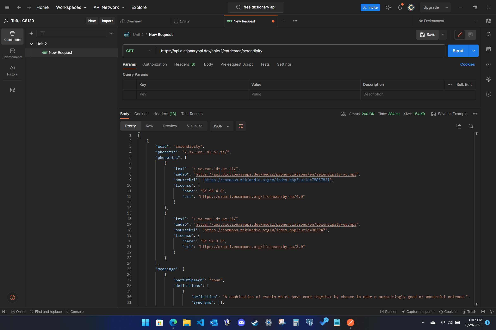

The API I am using is Free Dictionary API, which is found at https://dictionaryapi.dev. I found this API via Google search for a dictionary API. This API returns JSON data containing the definition, pronunciation, usage information, among other information related to the word that is requested.
You only need to provide the word you are requesting in the URL to retrieve the JSON data. No API key or other parameters/options are required. For example, the URL for the request made above is: https://api.dictionaryapi.dev/api/v2/entries/en/serendipity
This API could be used in other applications to verify whether a string input is a valid word (like in a Scrabble game), as it would not return anything useful if the word does not exist in the English dictionary. Another use could be to play an audio pronunciation of any word. This API returns a media file URL in the JSON data that could be used to play the audio of the word.
Below is a screenshot from Postman where I tested the API:
